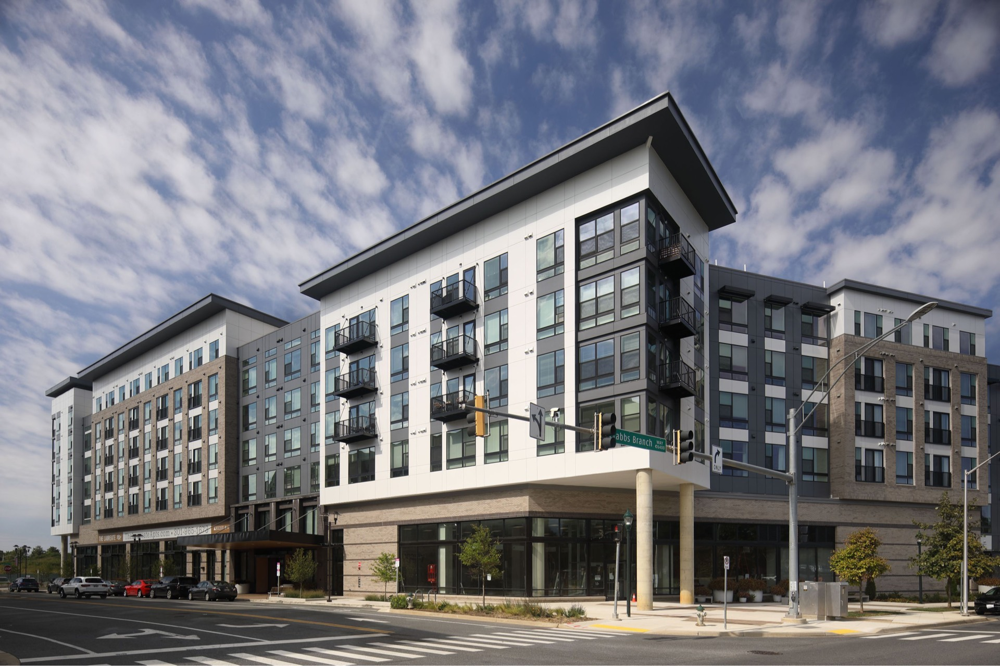

14 Pursue innovative development models
BACKGROUND WORK 1
Pursue self-sustaining mixed-income, mixed-use rental development
Mixed-income, mixed-use developments are a common best practice for creating new homes at a range of prices with commercial uses that spur economic activity and diversify project revenue. In Virginia Beach, developments like these—when appropriately located and supported by the necessary infrastructure—can help reduce sprawl, address aging commercial retail strips, and mitigate housing needs all in one fell swoop.
However, as land prices and development costs in Virginia Beach rise, establishing these types of developments can be difficult due to added expenses and complexities. Furthermore, the suite of federal and state tax credits and subsidies most commonly used to deliver affordable units in mixed-income projects are heavily oversubscribed. These resources are also outside the control of local governments.
In response to these challenges, a growing number of communities across the nation are creating innovative funding models to support mixed-income, mixed-use developments. Such approaches require meaningful initial investments but can be self-sustaining and transformative.
14.1 HOW IT WORKS
The Housing Opportunities Commission (HOC) of Montgomery County, Maryland, has pioneered a new “public development model.” In short, the model has four major steps:
- Generate a low-cost construction finance option using public funds.
- Partner with nonprofit and private developers to plan, build, and manage new projects.
- Maintain public stake in project equity to collect revenue and ensure affordability.
- Use project income to pay debt and reinvest into new developments.
Earlier in 2023, HOC completed the first project supported by this new Housing Production Fund (HPF) model. The Laureate is a 268-unit mixed-income, mixed-use, new construction building in Rockville, Maryland. The property is adjacent to the Shady Grove Metro Station.
Without using any LIHTC equity or any other traditional source of affordable housing subsidy, 25% of units are affordable at 50% AMI, and another 5% are affordable at 70% AMI. HOC financed The Laureate using the HPF as an equity partner alongside Bozzuto and EYA, two private developers. HOC contracts with Bozzuto to manage the property, but will remain the permanent owner.

Detailed explanations of these steps below use HOC’s approach as a best practice; however, certain aspects can be modified and changed to best suit Virginia Beach.
Use public sector capacity to supplement (or replace) oversubscribed federal resources
Demand for the most common affordable housing funding programs (e.g., LIHTC, Housing Choice Vouchers) regularly exceeds annual allocations from federal and state lawmakers. Therefore, localities must find and dedicate alternative sources of financing to develop affordable housing.
Establishing new production funds can increase a locality’s supply of affordable housing more efficiently and harness multiple strategies to expand affordable housing options, making the most of available resources while working toward long-term funding solutions.
Montgomery County, Maryland, addressed this challenge in 2021 by issuing a $50 million, taxable, 20-year municipal bond. Bond proceeds were put into the new Housing Production Fund (HPF), which provides low-cost construction loans to projects developed by HOC and its partners.
Because interest rates for bonds are generally favorable compared to market averages, the County essentially lends itself cheap debt (as “bridge loans”). This can replace privately sourced equity in a project’s capital stack, which would otherwise require higher returns on investment that would limit the development’s levels of affordability.
Collaborate with and leverage development partners
Establishing a locality-controlled fund specifically for the production of mixed-income housing can facilitate collaborations and private contributions without endangering the overall objective of affordability.
While HOC is using the HPF to finance some projects completely by itself, it’s also using the HPF on developments that include private and/or nonprofit partners. These collaborations leverage additional investments brought to the table, facilitate the inclusion of below-market rate units in new high-value areas, and allow HOC to significantly scale up its work.
Public development models can also play an important role in sustaining counter-cyclic housing construction, when economic conditions generally chill private development activity. As interest rates began increasing in 2022, HOC advertised the HPF to for-profit developers in the county whose upcoming projects no longer penciled out. HOC can “revive” these developments by becoming an equity partner, bringing low-cost money, and structuring the deal to subsequently include a range of affordable units.
In Virginia Beach, strong candidates for development partners include:
- Virginia Beach Community Development Corporation (VBCDC): As a subordinate nonprofit organization whose board is appointed by the City Council, VBCDC could eventually serve in a role similar to HOC in Montgomery County, Maryland. This would require intentional strategic planning and capacity building within the agency to position itself for conducting such activities.
- Private developers: High-capacity developers with experience in affordable rental housing (such as The Lawson Companies and The Franklin Johnston Group) and those who have previously partnered with the City on mixed-use projects (such as The Breeden Company) could easily be collaborators.
- Nonprofit housing providers: Mission-driven organizations that specialize in affordable rental housing and related services (such as Virginia Supportive Housing) could augment new developments by bringing additional grants to secure housing opportunities at a deeper affordability level than delivered by standard mixed-income models.
Secure taxpayer investments to generate revenue
Perhaps the most important part of this model is the permanent equity secured by the public development partner. Rather than fully transferring ownership to private or nonprofit owners, Virginia Beach can retain a stake in the project so that revenues from residential and commercial leases provide ongoing income. A permanent ownership stake by a public entity also helps guarantee that the affordability restrictions on applicable units are enforced.
Use income to manage debt and spur new projects
When projects supported by HOC are completed and leased up, the initial HPF investment is replaced with permanent financing from another source. HOC then revolves the money back into the HPF to be used in a future development.
As income flows from the property, proceeds can be used to cover interest payments on the bond. Over time, increased revenue might exceed the necessary debt service and can therefore be invested to complete needed upgrades or repairs, deepen affordability, or support the construction of other projects.
14.2 HOW TO DO IT
Within 6 months:
- Evaluate capacity needs for successful planning and implementation of this model. Assess possible avenues using existing structures (e.g., Department of Housing and Neighborhood Preservation, VBCDC), as well as possible new entities (such as a standalone public development entity).
- Join and participate in the Public Development Community of Practice, a quarterly working group managed by the Center for Public Enterprise (CPE). CPE has supported HOC’s HPF implementation and is currently advising other cities across the country on starting similar programs.
Within 1 year:
- Develop a strategic plan outlining the goals, objectives, and target populations for a Housing Production Fund.
- Identify the funding levels necessary to make desired mixed-income projects feasible.
- Determine whether issuing a general obligation bond for a revolving fund is feasible with respect to other current and projected debt-financed activities.
- Plan out development priorities to be sensitive to overall tax base needs of the City, relative to appropriate commercial/residential mix.
Within 2 years:
- Announce an interest in fostering mixed-use, mixed-income developments and identify sites and developers interested in pursuing this model. Sites can be privately or publicly owned.
- Systematically rank and prioritize sites and partners based on project feasibility and expected level of impact.
- Align zoning and planning incentives to accommodate this model.
- Select the first project, begin the pre-development stage, and issue the first loan.
14.3 WHO DOES WHAT
City of Virginia Beach: Establish the legal framework and regulations of a new fund. Create oversight committees or designate an existing agency to manage operations. Identify and allocate initial funding and sites from which to build the fund and new projects. Evaluate and amend land use regulations as needed to further mixed-use goals.
Private industries and businesses: Provide capital as an equity investor to the fund. Leverage construction and commercial development expertise to build mixed-use projects.
Nonprofit developers: Provide expertise in affordable housing development and management. Access grants and other funding to complement the production fund.
14.4 FUNDING SCOPE
The level of funding needed for successful mixed-income, mixed-use public development projects can vary significantly based on several factors, including the scale and scope of desired projects, location and land costs, and the affordability goals.
In Montgomery County, Maryland, the level of HPF dollars used per unit has ranged from approximately $50,000 to $80,000. For a 150-unit multifamily project, this would amount to roughly $10 million. While this initial investment is eventually recouped, the money is tied up during construction. Therefore, the full scope of a revolving loan fund should sufficiently cover the size and frequency of desired development.
If this initiative is paired with larger developments spearheaded by VBDA and/or a Housing Trust Fund, the revolving loan fund could act as additional leverage or efficiently fill gaps by targeting smaller projects less competitive for LIHTC awards. Virginia Beach may want to explore focusing this model on “missing middle” scale developments.
A production fund can also scale up over time as more funding partnerships are developed and units begin to sustain the fund. Initial contribution goals should consider how to create the foundation for self-sustaining growth and what is needed to achieve impactful projects.
14.5 POTENTIAL FUNDING SOURCES
The model proposed in this solution could easily serve as the “flagship” use for a Housing Trust Fund. HTFs across the nation commonly use revolving loans to finance projects, but few pair those investments with public ownership. As Virginia Beach pursues the creation of a new HTF, the City should keep this model in mind as a possible long-term strategy for support.
Thus, while the potential funding sources for HTFs can also apply here, the following three are most relevant:
- General obligation bond: Because a revolving loan fund is not permanently tied to a specific project’s revenue, general obligation bonds must be used if Virginia Beach uses municipal bond proceeds.
- Other public funds: Special taxes and fees could be levied as dedicated revenue but may not initially generate the scale of funding needed.
- Private funds: As Virginia Beach explores this model, outside investors with an interest in community development should be engaged. These include hospitals and other institutions (for “program-related investments”), philanthropic foundations, and LISC Hampton Roads.
The funds for equity investments (i.e., the permanent debt used to replace the revolving construction loan) could also be generated by a Housing Trust Fund, project-specific revenue bonds, and/or other public sector financing options.
Following a five-year, $50 million commitment of bond proceeds for affordable housing initiatives, the City of Richmond announced a one-for-one match by LISC. LISC will work with financial institutions and philanthropic organizations to bring the total investment to $100 million.
14.6 METRICS TO EVALUATE SUCCESS
- Project diversity: Assessing the mix of housing types developed through the fund, particularly smaller builds, nontraditional housing types (i.e., adaptive reuse, co-living spaces), and mixed-use living. Other considerations include diversity of neighborhoods impacted and equitable distribution of project locations.
- Innovation: Measuring the number of projects that incorporate unique place-making features, sustainable practices, renewable energy sources, or low-impact development techniques.
- Community benefits: Measuring the fund’s ability to impact multiple community goals. Assessing how projects contribute to job creation, activate underutilized spaces, and improve communities holistically.
- Return on investment: Evaluating the financial performance of mixed-use projects, including the return on investment for the fund. Tracking revenue generated and property value appreciation.
14.7 OTHER EXAMPLES
City of Greenville, NC Housing Impact Fund
- Approximately $5 million “blind pool fund” of revolving investment committed in exchange for a small guaranteed return over a term of about five years.
- Operates as an attractive, straightforward way for local banks, businesses, philanthropies, donor-advised funds, or individual investors to make a direct impact.
- Supports mixed-income developments that are too small for successful LIHTC applications.
Atlanta Urban Development Corporation
- Affiliate entity of Atlanta’s housing authority, created in 2023 to serve as vehicle for public development model following Montgomery County, Maryland example.
- Currently seeking $38 million Housing Opportunities Bond to develop new mixed-income rental housing. New projects will use public-private partnerships, but AUDC will permanently own and manage properties.
- Additional information: City of Atlanta presentation on AUDC (June 2023)